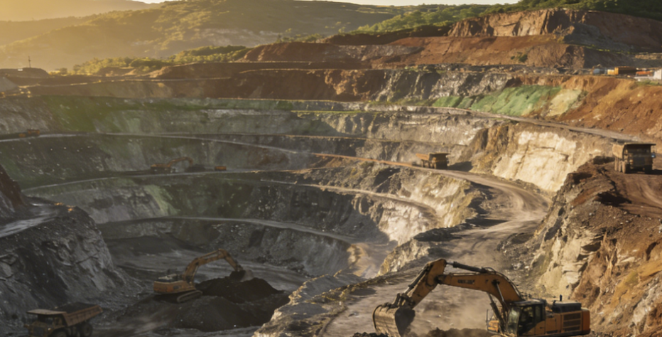
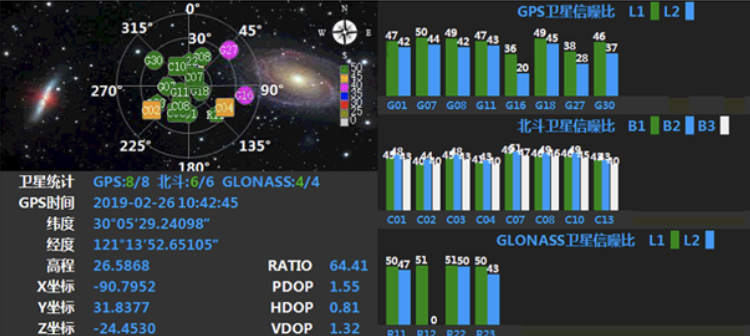
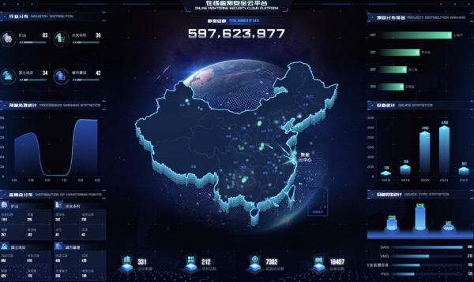

The Open-Pit Challenge
Large open-pit mines operate under constant geotechnical pressure. Bench failures, blasting vibrations, and heavy equipment loads create a dynamic risk environment that demands continuous, automated monitoring.
Bench Stability Risks
Multi-bench slope failures can cascade rapidly. Traditional survey intervals miss the early deformation signals that precede collapse.
Heavy Equipment Vibration
Continuous haul truck and excavator loads induce micro-vibrations that accelerate fatigue cracking in slope faces over time.
Blasting Impact
Repeated blast events generate shock waves that weaken rock mass integrity and can trigger sudden displacement events in adjacent benches.
Fragmented Monitoring Data
GNSS, radar, and total station data collected in isolation prevents holistic slope risk assessment and delays critical decisions.
From Sensor to Warning: The Data Flow
Medo's Pit-Watch solution creates an unbroken chain from field instrumentation to real-time decision support — four layers, zero gaps.

On-site Survey & Site Assessment
Through rigorous field diagnostics, our engineering team analyzes the complex geomechanics and operational layout of the open pit, evaluating slopes, bench stability, and high-risk zones.Key survey outputs include a 3D topographic model, slope stability classification, sensor placement plan, and network connectivity feasibility report — laying the foundation for a precisely tailored monitoring architecture.

Hardware & Integrated Monitoring Stations Development
Based on the survey results, we deploy a network of all-in-one integrated monitoring stations at critical locations across the site. Each station combines a high-precision GNSS receiver with a suite of environmental and structural sensors — measuring displacement, seepage, pore water pressure, rainfall, and more. Ruggedised enclosures ensure continuous operation in harsh outdoor conditions.

Data Transmission & GNSS Processing Platform
Raw sensor data is securely transmitted to the cloud-based MEDO computation platform, AMS, via satellite, 4G, or 5G links — whichever provides the most reliable coverage for the site. MEDO performs real-time GNSS baseline processing, multi-sensor fusion, and precision deformation calculation, converting raw signals into high-accuracy displacement vectors and trend indicators.
Intelligent Data Analytics & Remote Device Management
Acting as the core engine, the MDT Platform ensures high-precision collection and real-time acquisition of monitoring data. By integrating big data analytics and remote device management, the platform automates the entire process—from data retrieval and analysis to visual presentation—providing users with accurate, intuitive, and instantaneous equipment updates to fully understand the real-time status of the open pit.

Full-Cycle Lifecycle Management & Decision Support
Leveraging MD-NET and MD LINK, this step enables comprehensive project lifecycle management across large-scale displays and mobile devices. The system provides real-time intelligent warnings and instant status updates, empowering stakeholders to make rapid, informed decisions based on live project data.
Why Medo Pit-Watch
Purpose-built for the open-pit environment — not adapted from generic IoT platforms.
All-weather Millimeter Precision
Phase-differential GNSS processing delivers ±2mm accuracy in rain, dust, and extreme temperatures.
Automated Remote Monitoring
Fully unattended operation with solar power and satellite uplink backup. Alerts fire automatically.
Blasting-resistant Data Acquisition
Hardware hardened to IP67 with vibration-tolerant enclosures. Data acquisition resumes within seconds.
Recommended Hardware
Each component is field-validated for tailings dam environments and integrates natively with the Medo cloud platform.
Proven in the Field
Real deployments. Zero accidents.
Shanxi Huge Open-Pit Mine
Slope Safety Project
Challenge
A 380m deep open-pit coal mine in Shanxi Province faced recurring bench instability events.
Solution
Medo deployed 24 GNSS monitoring stations and 3 robotic total stations.
Results